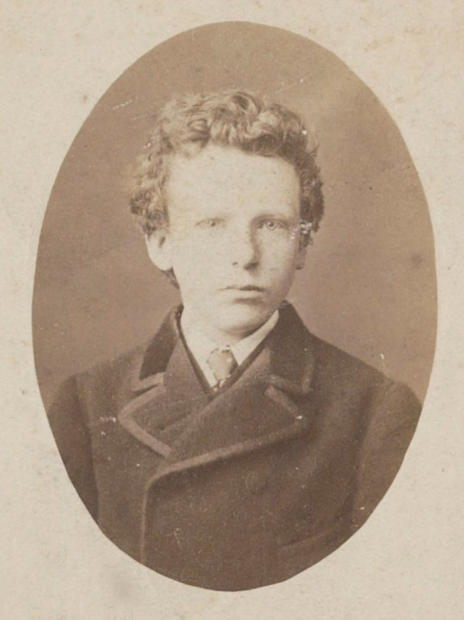

家庭成员
文森特的父亲提奥多洛斯·梵·高（Theodorus van Gogh，1822.2.2—1885.3.26）1849年就在津德尔特布道，他是一位新教牧师。1851年5月21日他与文森特的母亲安娜·科尼莉亚（1819—1907）刚认识便闪电订婚，安娜生于海牙，她的父亲在海牙被誉为"国王的装帧师"，因为他被选中装订第一部荷兰宪法。安娜的妹妹，嫁给文森特·梵高的叔叔。 [2]
文森特·梵高在家中是老大，他还有三个妹妹和两个弟弟。 [2]
在文森特一生中，他只与弟弟提奥和三妹威廉明娜保持了亲密的关系，而提奥也是文森特这一生中最大的支持者和崇拜者。 [2]
感情生活
1878年，梵高曾在阿姆斯特丹的时候去过沃斯家，见过表姐凯·沃斯·斯特里克。 [2]
1879年夏末，凯打算来埃顿的牧师公馆和文森特的家人同住在一起，为了重获家人认可，文森特认为自己必须要有一个妻子。 [2]
7月，在凯抵达之前，文森特和弟弟讨论过自己的决定，必须要有一个家，这个时候他读了不少维多利亚时期关于爱情与婚姻的文字，花了三天读了夏洛蒂·勃朗特的《雪莉》《简爱》，还读了哈里特·比彻·斯托的《我妻子和我》《我们和我们的邻居们》。 [2] 8月，凯抵达，文森特便向她表白，表姐愤怒地拒绝了，之后表姐便带着儿子离开埃顿回阿姆斯特丹。
文森特·梵高